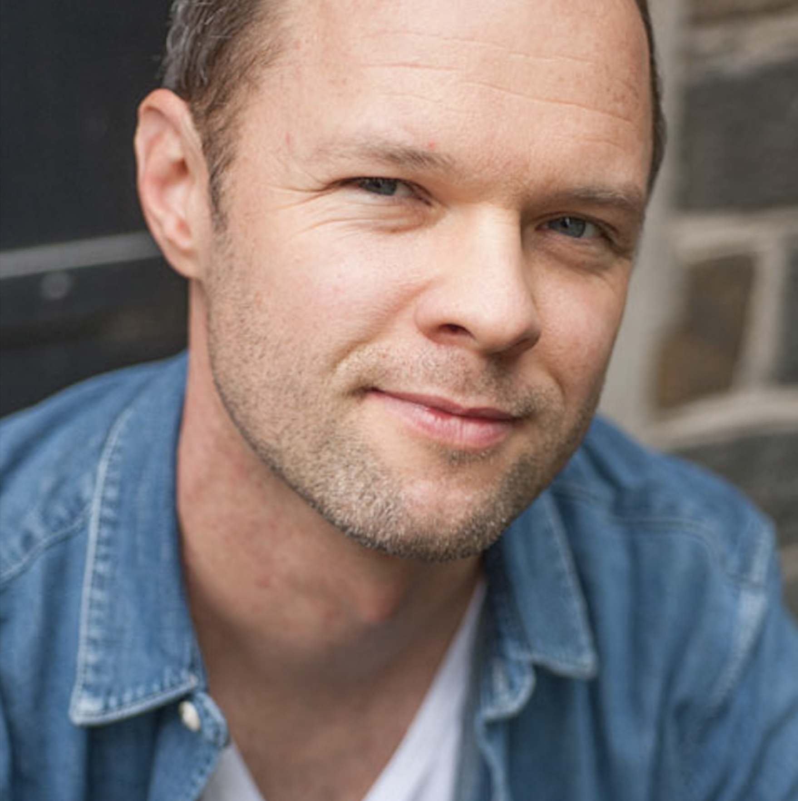

UX-designstudent – fokus på UX research & tjänstedesign
Jag är UX-designstudent med fokus på kvalitativ UX research, analys/syntes, idégenerering och tjänstedesign. Jag trivs i gränslandet mellan människor och beslut – där man behöver förstå behov på djupet och omsätta dem i tydliga prioriteringar och nästa steg.

Korta case med fokus på research, analys/syntes och tjänstedesign.
Jag drivs av att förstå vad som faktiskt ligger bakom ett problem – och att ta reda på vad som är viktigast för användare i verkliga situationer – särskilt när lösningen behöver fungera i ett större sammanhang än bara i en skärm. Jag söker LIA med tyngdpunkt på UX research och tjänstedesign, där jag får arbeta med verkliga problem – gärna tillsammans med team med kompletterande kompetenser.
“Jag trivs i gränslandet mellan människor och beslut – där man behöver förstå behov på djupet och omsätta dem i tydliga prioriteringar och nästa steg.”
Min styrka ligger i kombinationen av människoförståelse och analytisk skärpa: jag gillar att möta användare, ställa bra följdfrågor och fånga det väsentliga i stunden – och sedan strukturera materialet så att det leder till tydliga insikter och beslut.
Ett exempel på när min analys gjorde skillnad var i ett projekt om en AI-coaching-app. Intervjuerna visade att den största användargruppen främst behövde stöd och trygghet snarare än ett strikt målfokus. Det påverkade vår riktning: vi designade en lösning med flera lägen i chatten, där ett läge var mer coachande och lösningsorienterat, medan ett annat var mer empatiskt och lyssnande – som ett steg innan man går in i problemlösning.
Jag genomför intervjuer med fokus på öppna frågor, följdfrågor och trygghet i samtalet.
Jag är stark i att strukturera kvalitativ data, se mönster och koka ner komplex information till en tydlig kärna.
Jag gillar att hålla workshops och möten som skapar fokus, delaktighet och framdrift.
Jag använder användartester för att testa hypoteser och iterera baserat på observationer och friktion.
Jag hjälper gruppen att hålla fokus och röd tråd när arbetet riskerar att spreta.
Jag tar ofta en naturlig facilitatorroll och hjälper teamet att landa i tydliga frågeställningar, prioriteringar och nästa steg.
Jag uppskattar samarbeten där människor tar ansvar, kommunicerar tydligt och håller sig till saken – gärna med humor och värme.
Vid olika åsikter är jag flexibel i det som inte är centralt, och tydlig kring det som är viktigt.
Jag är genuint intresserad av människor, kommunikation och personlig utveckling. Jag får också energi av kreativa uttryck – jag dansar pardans och spelar gitarr/sjunger – och jag lär mig gärna nya saker genom att läsa och lyssna på poddar.
Hör gärna av dig om LIA eller för samtal om UX research och tjänstedesign.
Kontaktuppgifter finns i min ansökan. Det går också bra att kontakta mig via LinkedIn.